¡venga tu Reino!
renovación por devoción
de la pertenencia al Regnum Christi
La renovación por devoción se hace conforme al texto aquí propuesto, ordinariamente al concluir la celebración eucarística de la solemnidad de Jesucristo, Rey del universo. Si durante dicha solemnidad se celebra el Rito de asociación para nuevos miembros laicos, los demás miembros presentes renuevan su pertenencia al Regnum Christi mediante la participación activa en dicho Rito.
Comenzar ›espiritualidad · sección de jóvenes · GDL Norte
renovación de la pertenencia
Todos de pie.
Quien preside
A fin de renovar la aceptación que han hecho a la invitación de Cristo de ser sus amigos y sus apóstoles, viviendo su vocación bautismal según el carisma del Regnum Christi, expresemos delante de Dios nuestra voluntad de renovar la pertenencia al Regnum Christi y los compromisos que esta pertenencia conlleva.
Todos los miembros del Regnum Christi
Señor, Tú me has llamado a vivir conscientemente mi vocación bautismal a la santidad y al apostolado según el carisma del Regnum Christi, para entregarme a Cristo desde mi estado y condición de vida a fin de que Él reine en mi corazón y en la sociedad. Por eso deseo renovar mi pertenencia al Regnum Christi como miembro de esta familia espiritual. Para ello me comprometo a:
- Crecer en la amistad con Cristo desarrollando la vida de gracia a través de la oración y los sacramentos.
- Vivir las virtudes evangélicas de la pobreza, la obediencia filial y la pureza en pensamientos y acciones.
- Cumplir con amor y honestidad los deberes propios de mi estado de vida como un servicio a Dios y a los demás.
- Empeñarme en mi formación integral y forjar mi liderazgo cristiano.
- Emprender y participar en iniciativas apostólicas.
- Profesar un amor fiel y operante a la santa Iglesia, al papa y a los demás obispos.
- Ofrecer generosamente mi oración, talentos, tiempo y haberes para colaborar en la misión del Regnum Christi al servicio de la Iglesia.
me toca a mí
Quien preside
Movidos por el deseo de hacer presente el Reino de Cristo en los corazones y en la sociedad, y conscientes que Dios cuenta con la colaboración libre del hombre para llevar a cabo su plan de salvación, digamos juntos:
Todos los miembros del Regnum Christi
Me toca a mí, de mí también depende, que tus palabras, Señor, no se pierdan.
Me toca a mí que tu mensaje de salvación llegue a los hombres.
Me toca a mí vivir de tal manera tu palabra que, cuantos me vean te reconozcan y te den gloria y se sientan impulsados por tu gracia a participar de la fe de la Iglesia y a dar testimonio vivo de ella.
Me toca a mí encarnar el carisma del Regnum Christi para cumplir esta misión en la Iglesia y en el mundo.
conclusión
Quien preside
Bendigamos al Señor.
Todos
Demos gracias a Dios.
O bien, si la renovación por devoción no se ha hecho al final de una celebración eucarística:
Bendición
si quien preside no es sacerdote o diácono
Quien preside
Pidamos la bendición de Dios para que nos fortalezca en la misión que nos ha encomendado. Digamos juntos:
Todos (mientras cada uno hace la señal de la cruz)
El Señor nos bendiga, nos guarde de todo mal y nos lleve a la vida eterna. Amén.
Bendición
si preside un sacerdote o diácono
Sacerdote o diácono
El Señor esté con ustedes.
Todos
Y con tu espíritu.
Sacerdote o diácono
La bendición de Dios todopoderoso, Padre, Hijo † y Espíritu Santo, descienda sobre ustedes.
Todos
Amén.
*Extracto del Ritual del Regnum Christi (septiembre de 2019). Si en la misma ceremonia participan legionarios de Cristo, consagradas, laicos consagrados y laicos, todos juntos usan este texto.